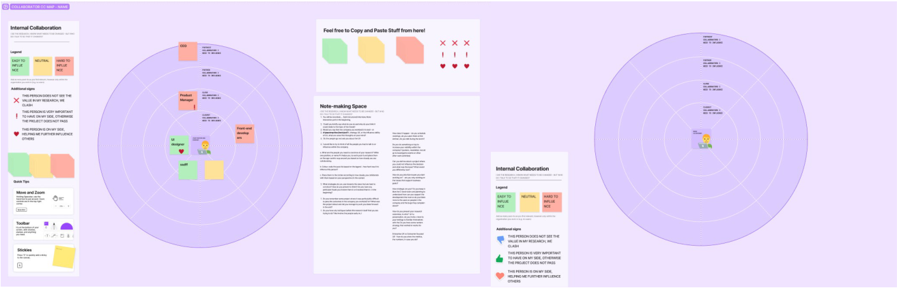
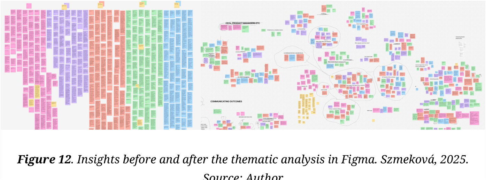
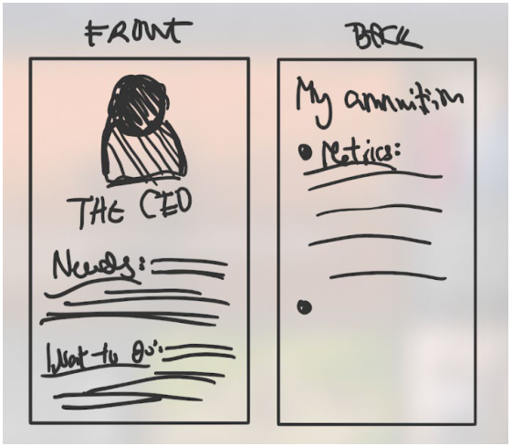
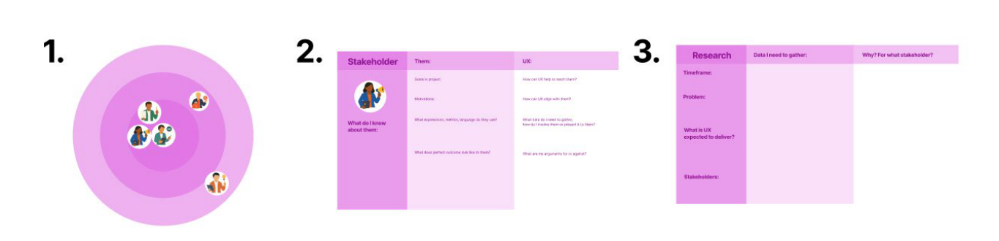

What happens between a research finding and a product decision?
How I examined stakeholder collaboration and negotiation in enterprise product decisions
I'm Sara, and I explore complex problems, translate research into actionable insights, and help teams identify opportunities for better smart products.
How I examined stakeholder collaboration and negotiation in enterprise product decisions

My work explored how onboarding design could help users navigate a complex platform on their own

Using reviews and usage data, I investigated customer expectations and the mobile app experience
Enterprise UX · Research · Concept development
Research can identify a clear user need and still struggle to influence a decision. For my master's thesis, I investigated how experienced UX professionals navigate that gap—and explored how a practical tool could support them.
In enterprise organisations, product decisions involve technical, commercial, and management priorities. Understanding users does not automatically give UX access to the people who decide what receives attention or resources.
I wanted to understand the work around the research: how practitioners build relationships, communicate evidence, and respond when user needs compete with other priorities.
I conducted five semi-structured interviews, generating approximately five hours of material. Four participants were experienced enterprise UX professionals. A fifth brought the perspective of an engineer who had moved into UX.
Alongside the interviews, I designed a stakeholder mapping exercise in Figma. Participants positioned colleagues according to how closely they worked together and indicated how easy or difficult those people were to influence.
I operated the map while participants explained their choices. This kept the conversation focused on their experiences and let me ask about specific relationships.
I analysed the interviews thematically and compared the stakeholder maps. I looked for recurring experiences, differences between participants, and the tactics they used to move research forward. Participants were anonymised because the conversations covered sensitive workplace relationships.


Participants often described engineers, developers, and product managers as constructive collaborators, particularly when involved early.
Implication: Focusing only on communication between UX and engineering would have missed much of the difficulty participants described.
More difficult relationships frequently appeared in the outer layers of participants' networks, including sales, account management, and senior leadership.
Implication: UX professionals needed to understand who could affect a decision and how to reach them, beyond their daily collaborators.
Participants described adapting how they communicated research to different audiences. Trusted colleagues also helped UX priorities travel across organisational boundaries.
Implication: Preparing evidence and understanding stakeholder relationships were connected tasks.
The findings led me to develop the Enterprise UX Negotiation Cards, a slide-based concept in Figma. It brought together three activities:
I made the stakeholder profiles concise and editable. They were starting points for reflection, to be adapted to a particular organisation.


I reviewed the concept with two original participants in separate online sessions of approximately 30 minutes each. These were exploratory discussions combining a walkthrough, critique, and further ideas.
Feedback suggested possible uses in onboarding and team alignment. It also raised a concern: documenting stakeholders could become more work than the tool was worth.
I kept the profiles concise and adaptable, and explored an AI role-play extension following a participant's suggestion. That extension was created but not formally tested.
The outcome was a research-informed concept with early practitioner feedback. I did not measure whether it improved stakeholder relationships or changed product decisions.
My biggest shift was moving away from an expectation of conflict between UX and engineering. The research pointed toward a more specific challenge: navigating people outside the immediate team who still shape what happens to user insights.
The study reflects five practitioners' accounts in Denmark. It does not include the perspectives of their engineering, commercial, or leadership stakeholders, and the concept review captured initial reactions rather than use over time.
My next step would be to include those perspectives and trial a lighter version of the cards around a real project decision. I would investigate whether the preparation helped teams identify missing evidence, involve relevant people earlier, and navigate the conversation more effectively.
My work explored how onboarding design could help users navigate a complex platform on their own
Explain what users needed to do independently, what made it difficult, and which parts of the work you owned with your colleague.
Add the research questions, participants, methods, and the reasons behind those choices.
Show the strongest finding, the evidence behind it, and what it changed in the proposed onboarding.
Explain what was tested or delivered, what remains uncertain, and what you learned.
Negative reviews suggested that the app wasn’t delivering enough value. Usage data told a more complicated story. I brought these perspectives together to investigate what might explain the difference.
The mobile app complemented a more comprehensive desktop product used to manage businesses, particularly in hospitality. It gave users quick access to key information about their operations.
However, written reviews described limited functionality and questioned the app’s usefulness.
I wanted to understand how those reactions related to actual usage, and whether the way the app was presented created expectations it could not meet.
I combined three sources of evidence to examine the app from different perspectives:
I also considered the app’s relationship with the wider desktop product and its international customer base.
Access to research participants was limited, so the study relied on existing data rather than new interviews or a survey. This helped identify patterns and possible explanations, but left users’ motivations unconfirmed.
The ratings suggested dissatisfaction, but internal data also showed regular usage and returning users.
These signals could coexist: people could find the app useful for some tasks and still be dissatisfied with its limitations.
What this meant: regular usage alone could not establish satisfaction, and reviews alone could not describe the experience of the whole user base.
45 ratings
26 ratings
Ratio of daily to monthly active users in the latest period analysed.
Reviews highlighted missing functionality. Meanwhile, the mobile app was intended to provide a focused overview, rather than reproduce the desktop product.
In my assessment, its communication did not make that distinction sufficiently clear. This suggested an expectation gap: users might judge a deliberately limited companion app as an incomplete version of the product they already knew.
The app was intended for quick checks of business information. For that purpose, a short visit could be appropriate.
I interpreted session duration in relation to that intended use, rather than treating longer sessions as an automatic sign of success. Session length alone, however, could not show whether users completed their tasks successfully.
Present the app as a mobile companion for checking key business information.
Understand which requested features represent important unmet needs.
Speak with users to distinguish unclear expectations from limitations in the product itself.
I recommended making the app’s purpose clearer in its store listings and website descriptions: a mobile companion for checking key information.
Alongside that communication change, I recommended investigating requested functionality to understand which gaps were worth addressing.
Clearer messaging might reduce mismatched expectations, but it would not resolve genuinely missing capabilities.
The project produced an evidence-based assessment, a SWOT synthesis, and recommendations for communication and further development.
Its main contribution was a more specific explanation to investigate: dissatisfaction might reflect a mismatch between the app’s intended scope and what some users expected from it.
The thesis did not measure the effect of implementing these recommendations. I cannot claim that the work improved ratings, adoption, or satisfaction.
This project taught me to question what each metric could actually tell me. Reviews revealed dissatisfaction, while behavioural data showed continued use. Neither source explained the whole experience.
My next step would be to speak with both regular users and dissatisfied users, asking what they expected to accomplish and where the mobile app fell short.
That would help distinguish unclear communication from missing functionality before prioritising changes.
I'm from Czechia and based in Denmark, with a background in international trade and IT Product Design. I'm interested in how people use complex products—and how teams decide what to improve.
My experience spans UX research, B2B marketing, and hardware and software customer support. Outside work, I enjoy drawing, hiking, and Heels dance.
Hardware & software customer support
UX research internship & marketing
UX internship in fintech
Design foundation: HTML5 UP